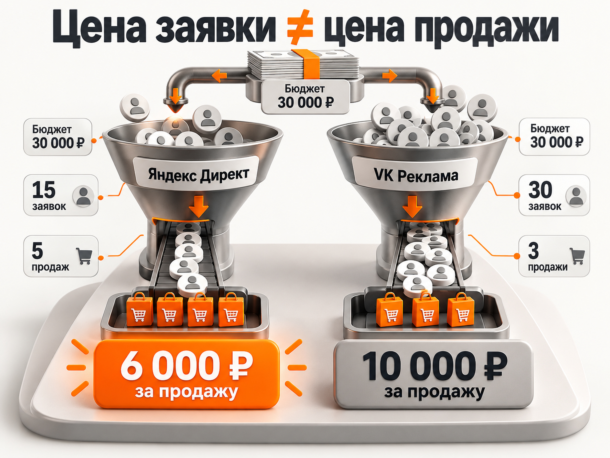

Блог о платном трафике
Реклама ВК или Яндекс Директ: что лучше выбрать для бизнеса
Если у бизнеса уже есть сформированный поисковый спрос, я бы в большинстве случаев сначала запускал Яндекс Директ. Особенно это касается услуг, B2B, производства, строительства и товаров, которые покупатели целенаправленно ищут.
VK Реклама может оказаться более подходящим первым каналом, когда продукт нужно показать, объяснить его ценность или заинтересовать человека ещё до появления поискового запроса. Например, для отдельных онлайн-курсов, визуальных товаров, мероприятий и контентных проектов.
Но выбирать площадку только по популярности или стоимости клика неправильно. Важно понять, где находится потенциальный клиент, какой путь он проходит до покупки и сколько бизнес готов платить за продажу.
Главное отличие VK Рекламы от Яндекс Директа
Поиск Яндекса работает прежде всего со сформированным спросом, а VK Реклама чаще позволяет находить потенциальных покупателей по их характеристикам и поведению.
Допустим, человек вводит в Яндексе запрос «купить промышленный компрессор». Он уже обозначил свою потребность. Задача рекламодателя - предложить подходящий товар и убедить человека обратиться именно в его компанию.
В VK ситуация обычно другая. Пользователь смотрит публикации, видео или общается. Рекламная система подбирает объявления, которые могут его заинтересовать, но потребность в покупке в этот момент необязательно существует.
У VK Рекламы есть таргетинг по ключевым фразам, интересам, поведению и аудиториям. Однако ключевые фразы в таргетинге не означают, что объявление показывается непосредственно в поисковой выдаче по запросу пользователя.
При этом сравнивать всю систему Яндекс Директа только с поисковой рекламой было бы неправильно.
В Директе доступны Поиск, Рекламная сеть Яндекса (РСЯ) и другие места размещения. В РСЯ реклама также подбирается с учётом интересов, поведения и характеристик аудитории.
Поэтому корректнее сравнивать три механики: рекламу на Поиске Яндекса, рекламу в РСЯ и VK Рекламу.
Сравнение Яндекс Директа, РСЯ и VK Рекламы
| Критерий | Поиск Яндекса | РСЯ | VK Реклама |
|---|---|---|---|
| Основная механика | Ответ на поисковый запрос | Подбор аудитории и площадок | Подбор аудитории в социальной и контентной среде |
| Готовность к покупке | Может быть высокой | Зависит от аудитории | Зависит от аудитории |
| Работа с существующим спросом | Сильная сторона | Возможна | Возможна, но обычно менее прямая |
| Форматы | Текстовые и товарные объявления | Текстово-графические и другие форматы | Изображения, видео и другие форматы |
| Зависимость от креатива | Обычно ниже | Высокая | Высокая |
| Продвижение без классического сайта | Возможны отдельные сценарии | Возможны отдельные сценарии | Лид-формы, сообщества и другие объекты |
| B2B и сложные услуги | Часто хороший первый выбор | Дополнительные гипотезы | Тестирование конкретных аудиторий |
| Контентные проекты | Подходит при наличии запросов | Возможен прогрев | Часто подходит для привлечения аудитории |
| Основной риск | Высокая конкуренция и дорогой трафик | Нецелевая аудитория | Недостаточный интерес к покупке |
Универсально более дешёвого канала нет. Стоимость привлечения зависит от ниши, региона, конкуренции, предложения и качества настройки.
Главное преимущество Директа для меня заключается в том, что внутри одной рекламной системы можно работать и с готовым поисковым спросом, и с более широкой аудиторией.
Однако успешность рекламной кампании определяется не количеством доступных инструментов, а конечными продажами.
Что выбрать для конкретного бизнеса
Выбирать рекламную систему нужно по наличию спроса и способу принятия решения о покупке, а не только по принадлежности бизнеса к определённой отрасли.
| Направление бизнеса | Что тестировать первым | Когда подключать другой канал |
|---|---|---|
| B2B, производство, оборудование | Поиск Яндекса | Для дополнительного охвата, ретаргетинга и отдельных аудиторий |
| Юридические и другие услуги | Поиск Яндекса | Когда нужен дополнительный объём лидов |
| Недвижимость | Поиск при наличии конкретного спроса | Для демонстрации объектов и работы с аудиторией на ранних этапах выбора |
| Локальные услуги | Поиск и релевантные размещения в Картах | Для продвижения предложений и повторных обращений |
| Интернет-магазины | Директ с товарными форматами при наличии спроса | Для визуальных продуктов, новых коллекций и формирования интереса |
| Онлайн-школы | Поиск или VK в зависимости от продукта | Для вебинаров, подписок, прогрева и дополнительного трафика |
| Мероприятия и контентные продукты | Часто VK Реклама | Для перехвата существующего спроса в Поиске |
Это не рейтинг эффективности по отраслям, а отправные гипотезы для тестирования.
Например, для продажи промышленного оборудования я бы сначала проверил коммерческие поисковые запросы. Но если компания предлагает принципиально новую технологию, о которой потенциальные покупатели ещё не знают, одного Поиска может оказаться недостаточно.
С недвижимостью тоже нет универсального правила. Люди могут активно искать квартиры в определённом районе, а могут ещё только задумываться о покупке. Для этих аудиторий понадобятся разные рекламные подходы.
Когда лучше запускать Яндекс Директ
Яндекс Директ особенно логичен для первого теста, когда люди уже ищут конкретную услугу, товар или исполнителя.
Например:
- «установка кондиционера Ростов»;
- «юрист по банкротству Краснодар»;
- «купить промышленную дробилку»;
- «строительство дома под ключ»;
- «аренда склада Москва».
В таких ситуациях не нужно сначала объяснять человеку, почему ему вообще может понадобиться продукт. Его задача уже сформулирована.
При этом важно проверить реальный объём подходящих запросов. Наличие нескольких коммерческих фраз ещё не означает, что через Поиск получится привлечь нужное количество клиентов.
Для B2B дополнительно имеет значение качество семантики. Один запрос может приводить потенциальных покупателей оборудования, а другой - студентов, соискателей или людей, которые ищут инструкции.
Именно поэтому я считаю анализ поисковых запросов одним из сильных инструментов управления качеством трафика.
Подробнее: Яндекс Директ для B2B.
Когда VK Реклама может быть лучше Яндекс Директа
VK имеет смысл рассматривать как основной канал, если продукт легче показать человеку, чем дождаться, пока он самостоятельно начнёт его искать.
Например, необычный образовательный курс может заинтересовать пользователя после просмотра видеоролика или полезной публикации. Но человек необязательно будет вводить название такого курса в Яндексе.
Для подобных продуктов социальная реклама позволяет начинать взаимодействие раньше.
VK Реклама также подходит для продвижения сообществ, контента, подписок и лид-форм, где пользователю не всегда требуется переходить на отдельный сайт.
Ещё одно направление - продукты с длинным циклом принятия решения. Человек может несколько раз столкнуться с рекламой, изучить предложение и только потом обратиться.
Но здесь есть важное ограничение: интерес к объявлению не равен готовности покупать.
Поэтому я бы не делал вывод о преимуществе VK только на основании большого количества переходов, подписок или дешёвых заявок.
Сколько денег нужно для тестирования рекламы
Тестовый бюджет лучше рассчитывать от необходимого количества заявок или продаж, а не выбирать случайную сумму.
Если бизнес хочет получить пять продаж, сначала нужно определить предполагаемую конверсию обращения в покупку.
Рассмотрим условный пример.
Компания планирует получить пять продаж. Предположим, что в среднем покупает каждый пятый обратившийся клиент, а одна заявка обходится в 1 500 рублей.
Тогда:
- План продаж: 5.
- Предполагаемая конверсия заявки в продажу: 20%.
- Необходимое количество заявок: 25.
- Условная стоимость заявки: 1 500 ₽.
- Расчётный рекламный бюджет: 37 500 ₽.
Формула:
Бюджет = план продаж / конверсия заявки в продажу × стоимость заявки.
Значение конверсии в формуле используется в виде десятичной дроби: 20% = 0,2.
Это учебный пример, а не прогноз для конкретной рекламной кампании и не средняя стоимость рекламы на рынке. Реальная стоимость заявки заранее неизвестна, поэтому первоначальный бюджет необходимо корректировать по полученной статистике.
Кроме рекламного бюджета, отдельно учитываются расходы на настройку, ведение и другие необходимые работы.
Для расчётов можно использовать калькулятор рекламного бюджета.
Стоит ли одновременно запускать VK и Яндекс Директ
Одновременный запуск двух рекламных систем оправдан, если хватает средств для самостоятельной оценки каждой из них.
Я бы не рекомендовал автоматически делить небольшой бюджет пополам.
Если бизнес продаёт востребованную услугу и располагает ограниченными средствами, разумнее сначала проверить наиболее очевидные коммерческие запросы в Яндекс Директе.
Когда появятся данные о стоимости заявок и продаж, можно оценить необходимость дополнительного канала.
Если же продукт новый и сформированного спроса почти нет, логичнее сначала проверить VK или другой подходящий аудиторный канал.
Мой порядок действий:
- Проверить спрос в Яндексе и определить, как потенциальный клиент выбирает продукт.
- Выбрать рекламный канал и сформулировать конкретную гипотезу.
- Подготовить предложение, посадочную страницу или лид-форму.
- Настроить отслеживание обращений и продаж.
- Провести тест и оценить не только количество, но и качество заявок.
- Решить, нужно ли масштабировать канал или тестировать следующий.
При сравнении важно учитывать, что два канала могут выполнять разные роли в одной воронке. Например, первоначальное знакомство с продуктом происходит в VK, а последующий поиск компании - через Яндекс.
Поэтому результаты нельзя всегда механически приписывать только последнему рекламному переходу.
Как правильно сравнивать результаты VK и Яндекс Директа
Главная ошибка - выбирать рекламную систему исключительно по стоимости клика или заявки.
Допустим, две рекламные кампании получили одинаковый бюджет, но привели разное количество обращений и продаж.
Рассмотрим условный пример, не связанный с результатами реального рекламодателя.
| Показатель | Яндекс Директ | VK Реклама |
|---|---|---|
| Рекламный бюджет | 30 000 ₽ | 30 000 ₽ |
| Заявки | 15 | 30 |
| Стоимость заявки (CPL) | 2 000 ₽ | 1 000 ₽ |
| Продажи | 5 | 3 |
| Стоимость продажи | 6 000 ₽ | 10 000 ₽ |
По стоимости заявки VK выглядит значительно выгоднее: 1 000 рублей против 2 000 рублей.
Но в Яндекс Директе из 15 обращений получилось пять продаж, а в VK из 30 обращений только три.
В результате стоимость продажи в Яндексе составила 6 000 рублей, а в VK - 10 000 рублей.
То есть канал с вдвое более дорогой заявкой оказался выгоднее по стоимости продажи.

Это и есть причина, по которой я не рекомендую выбирать рекламную систему по одному CPL.
Для объективного сравнения необходимо учитывать:
- количество целевых обращений;
- долю квалифицированных лидов;
- стоимость квалифицированного лида;
- конверсию обращений в продажи;
- стоимость привлечения клиента;
- выручку и прибыль от привлечённых клиентов.
Если сделки длительные, оценивать каналы нужно с учётом полного цикла продаж. Иначе часть клиентов ещё не успеет совершить покупку к моменту сравнения.
Подробнее о показателях: CPA в Яндекс Директе и ROAS в маркетинге.
Почему оба рекламных канала могут не работать
Неудачный запуск не всегда означает, что рекламная система не подходит бизнесу.
Результат может оказаться слабым из-за ошибок в самой рекламной связке.
Например:
- выбран слишком широкий или нецелевой сегмент аудитории;
- рекламное объявление обещает одно, а посадочная страница предлагает другое;
- цена и условия предложения неконкурентоспособны;
- сайт неудобен или не вызывает доверия;
- менеджеры медленно обрабатывают обращения;
- рекламный бюджет слишком мал для получения статистики;
- результат оценивается только по промежуточным показателям.
Поэтому я разделяю эффективность рекламной кампании и эффективность всей системы привлечения клиентов.
Даже хороший источник целевого трафика не сможет обеспечить нормальные продажи, если компания плохо обрабатывает заявки или предлагает продукт, который не соответствует ожиданиям покупателей.
VK или Яндекс Директ: что в итоге лучше
Для большинства компаний со сформированным поисковым спросом я бы начинал с Яндекс Директа. Особенно когда речь идёт о коммерческих услугах, B2B, оборудовании, строительстве и других направлениях, где покупатель осознанно ищет товар или исполнителя.
VK Реклама может быть более подходящей для знакомства аудитории с новым продуктом, продвижения контента, подписок, визуальных товаров и некоторых образовательных проектов.
Если бюджет ограничен, я бы не запускал две рекламные системы одновременно без конкретной задачи. Сначала нужно выбрать наиболее подходящий канал, получить статистику и оценить стоимость клиента.
И только после этого решать, нужен ли дополнительный источник трафика.
Я занимаюсь Яндекс Директом с 2014 года и в своей работе ориентируюсь прежде всего на качество заявок и продажи, а не только на показатели рекламного кабинета.
Посмотреть примеры работы можно в моих кейсах. Условия сотрудничества и контакты размещены на главной странице сайта.